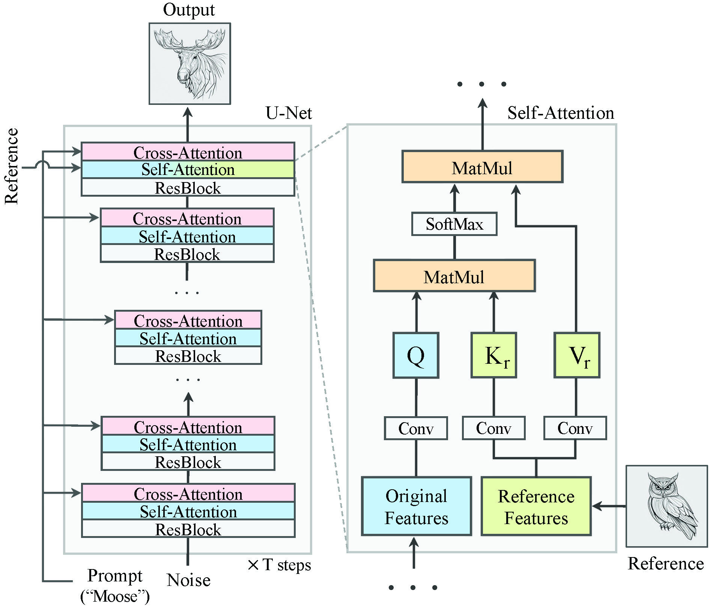

Teasor
We tackle Visual Style Prompting, reflecting style elements from reference images and contents from text prompts, in a training-free manner.

In the evolving domain of text-to-image generation, diffusion models have emerged as powerful tools in content creation. Despite their remarkable capability, existing models still face challenges in achieving controlled generation with a consistent style, requiring costly fine-tuning or often inadequately transferring the visual elements due to content leakage.
To address these challenges, we propose a novel approach, visual style prompting, to produce a diverse range of images while maintaining specific style elements and nuances. During the denoising process, we keep the query from original features while swapping the key and value with those from reference features in the late self-attention layers. This approach allows for the visual style prompting without any fine-tuning, ensuring that generated images maintain a faithful style. Through extensive evaluation across various styles and text prompts, our method demonstrates superiority over existing approaches, best reflecting the style of the references and ensuring that resulting images match the text prompts most accurately.

Overview of swapping self-attention for visual style prompting. We swap the key and value features of self-attention block in an original denoising process with the ones from a ref- erence denoising process. This procedure is repeated for T steps, resulting in the original content rendered with the style elements from the reference image
Competitors face challenges in generating images with diverse layouts and compositions due to content leakage from the reference.

Visual style prompting with existing techniques. Our method is compatible with ControlNet and Dreambooth-LoRA.